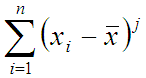
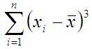

This aggregation_operator calculates the variance for all elements in the group.It is implemented as follow:
Where:
| Xi | is the index value for the ith amino acid. |
| X | is the mean of the indices values. |
| n | is the number of amino acid. |
This aggregation_operator calculates de variability coefficient for all elements in the group.
Where:
| s | is the variance for the group. |
| X | is the mean of the indices values. |
This aggregation_operator calculate the standard desviation for the group.It is implemented as follow:
Where:
| Xi | is the index value for each amino acid. |
| X | is the mean of the indices values. |
| n | is the number of amino acid in the group. |
Represents the area traced by the center of a rolling sphere over the residue surface, this index takes value cero when the amino acid is fully buried.
Where:
| Mj |

|
| s4 | is the standard deviation raised to the fourth power. |
| n | is the number of amino acid in the group. |
Skewness (this term was first used by Pearson, 1895) measures the deviation of the distribution from symmetry. If the skewness is clearly different from 0, then that distribution is asymmetrical, while normal distributions are perfectly symmetrical.
Where:
| M3 |

|
| s3 | is the standard desviation (sigma) raised to the third power. The standard deviation (s) is the root of the variance (S). |
| n | is the number of amino acid in the group |
This aggregation_operator calculate the range value.It is implemented as follow:
Where:
| Xmax | is the maximum index value in the group. |
| Xmin | is the minimum index value in the group |
This aggregation_operator calculate the minimum index value contained in the group.
This aggregation_operator calculate the maximum index value contained in the group.
This aggregation_operator calculates the element located in the 25% of the sorted group.
This aggregation_operator calculates the element located in the 50% in the sorted group.
This aggregation_operator calculates the element located in the 75% in the sorted group.
This aggregation_operator calculate the I50 value for the group. It is implemented as follow:
Where:
| P75 | is the quartile Q3. |
| P25 | is the quartile Q1. |